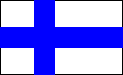
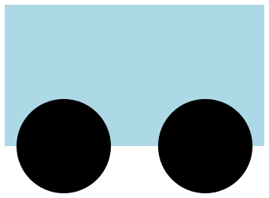

6.2
1 Aloita tästä
Koodausta kouluun materiaali soveltuu ohjelmoinnin opettamiseen peruskoulun 5.- 9.luokilla.
Voit aloittaa ohjelmoinnin vaikka sinulla ei olisi aikaisempaa kokemusta aiheesta. Seuraamalla "Aloita tästä"-osion ohjeita saat yleiskuvan siitä mitä on Racket-ohjelmointi.
Jakson lopuksi osaat ohjelmoida mm. nämä kuvat:

